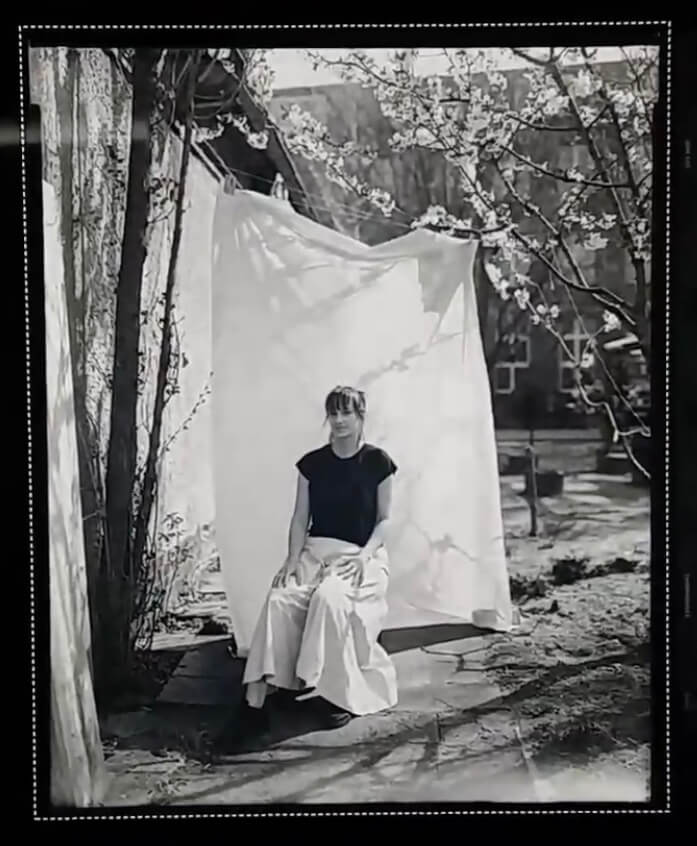

About

My Story
Did you know that people look at a website for only a few seconds before they decide if they like it?
Hi, I’m Andrea, and I create designs that speak to users. As a UI designer, I use data to generate insights and make informed decisions to help users navigate interfaces with ease. I love getting new ideas, taking in different opinions and implementing them into my craft.
Content Specialist turned UI, I’m passionate about user behaviour, the psychology behind it, and finding solutions that meet the needs of businesses and clients alike. I’m now looking for exciting opportunities where I can contribute with my positive and open mindset.
Skills & Tools
-
Relevant Skills
- Wireframing
- Prototyping
- Mockups
- User Personas
- Style Guides
- Copywriting
- Project Management
-
Tools
- Sketch
- Invision
- Affinity Design
- Figma